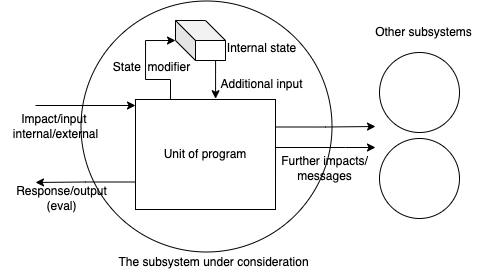

Observation principle and program units
Common functional pattern
Thinking of program structure we inevitably come to the necessity to somehow structure it, to find common elements which can be described uniformly. That is happening FMPOV because the good ability of our brains to perform deduction. That is having the most general structure it is easier to see it on particular examples than without the generalization. However induction, that is transformation a series of isolated observations to the general common behavior is a more complicated task. So the same story is with programs, and we try to decompose it to uniform elements for better judging about.
Those let to differentiation of programming languages based on a way they structure the program text. We know about
- functional
- procedural
- object oriented
- logical etc.
languages and also about modules, libraries, interfaces, classes, types etc. just to represent different ways of thinking about what a program consists of and how to treat it's elements to analyze.
My every day work is highly connected with smart contracts and thinking about the most common element (unit) of a contract I've come to the following representation. (However as programming language and software unit for contracts don't give something very special, the following structure can be easily adopted almost to any program kind).

Let's shortly describe what we have here. We consider a system (program complex with holistic utility) to contain:
Several subsystems divided by the hardware, access control, or just by purpose (circles)
The unit of program which commonly is referred as interface function - the very essence that receives external (from the outer world - another subsystem) or internal (from the same subsystem) impact or message or signal, whatever serialized data of interaction
The state of the subsystem, that is a series of values characterizing the current internal variables, or database or memory whatever which has a "storage" with read or/and write access. That state can be considered as a unintended immanent input for all operations, so the impacting agent doesn't have a direct access or control to this state
As a result of an impact we have
- Serialized response or output, the result of evaluation of the program unit (can be void)
- Further messages which can be sent to other agents (the external (superstate) execution)
- And state modifier, which having write access to the internal state can modify it in a prescribed way (the internal execution)
I am not going to discuss here pros and cons of such a scheme - we don't need it as a final artifact, just as sandbox for our following reasoning.
Observability
Observability, based on Wikipedia is
a measure of how well internal states of a system can be inferred from knowledge of its external outputs.
Coming originally from quantum mechanics observability principle can be naïvely explained as "the only knowledge we can mine from the object is that we get from the observations". In theoretical physics we generally distinguish between observable and unobservable values. For example that leads to many calibration theories where, introducing some state variable $A$ and knowing that really observable value is $F(A)$ with for example linear $F$ we can introduce new state variable $A'=A+C$ such that $F(C)=0$, so the observation holds and $C$ is "unobservable".
In computer science we can also introduce state variables, and as well we can think that observations (get-methods) do not give us full access to the internal state, so that really observable values differ from the full state in general. That allows us to judge the external system behavior from the position of observability and distinguish therefore between internal and external "phase" space.
The mentioned above get-methods we will call measurements.
Measurements
Everybody knows that computers cannot still deal with real numbers, so we firstly restrict ourselves only by measurements of type $f:S→ \mathbb{N}$ assuming the isomorphism between $\mathbb{N}$ and $\mathbb{Q}$ for example. But that is not the only restriction. Actually we cannot measure very big numbers, as computers are finite and every number is actually represented by finite series of bits. So we can restrict the measurements codomain with $\mathbb{B}$ where $\mathbb{B}={0,1}$ boolean set.
So having a set of possible measurements as functions $f:S→ \mathbb{B}$ we can ask ourselves about a possibility to reconstruct the original state (in external meaning) based only on all possible measurements.
The brilliant work Smooth Manifolds and Observables sketches the way it could be done. However this book describes $\mathbb{R}$-algebras but we have something that is built upon $\mathbb{B}$. We can try to repeat the steps for boolean algebra.
Suggest a state $s∈S$ and a set of all feasible functions $F$ consisting of $f:S→ \mathbb{B}$, which we called measurements. Note that if we have two function $f_1,f_2$ we can construct $f_3=f_1\land f_2$ and $f_4=f_1\lor f_2$ even if they don't occasionally belong to the original set. Also we have two constants $∀ s, \textrm{true}(s)=1;\textrm{false}(s)=0$. Trivial calculations will lead us to the fact that every set of such measurements can be expanded to boolean algebra.
Isomorphism
So now start with the given $\mathbb{B}$-algebra of measurements. I will not give here strict propositions, just sketching what can be done with that stuff on some example.
Suggest $S=\mathbb{N}$ so we have a collection $f_α :\mathbb{N}→ \mathbb{B}$ generating boolean algebra. It is quite obvious that this collection is isomorphic to all possible subsets $u ⊆ \mathbb{N}$ in the following sense:
$$iso:f↔ u ⟺ ∀ s∈ u, f(s)=1 ∧ ∀ s∈ \mathbb{N} \setminus u, f(s)=0$$ The algebraic operations will be then: union $\to$ disjunction, intersection $\to$ conjunction, units - $\varnothing$ $\to$ $false$, $\mathbb{N}$ $\to$ $true$.
So that the collection index $α ∈ 2^\mathbb{N}$ belongs to power-set of $\mathbb{N}$.
Now consider all possible homomorphisms between $F = 2^\mathbb{N}$ and $\mathbb{B}$ which preserve boolean algebraic structure. How can we distinguish between two of them?
Take $h_x:F → \mathbb{B}, h_x(u) = 1,\ \textrm{iff}\ x∈ u$ . Prove that collection of $h_x$ contains all possible homomorphisms. Suggest we have one homomorphism $h$ such that
$$∀ x∈ \mathbb{N}\ ∃ v_x∈ 2^\mathbb{N}, x∈ v_x ∧ h(v_x) = 0$$
so we cannot say that it is one of $h_x$.
Hence
$$1≡ h(\mathbb{N})=h(\cup_{x∈ \mathbb{N}}{x})=h(\cup_{x∈ \mathbb{N}}v_x)=\lor_{x}h(v_x)=0$$
as $v_x∋ x\ ∀ x$ and we have come to contradiction.
We see now that each homomorphism in some sense corresponds to a natural point $x$. Interpreting functional application $x(u)≡ h_x(u)=x∈u$ we have for all measurement $f$
$$ f(x)=[x∈iso(f)]=x(u)=x(iso(u))=x(f) $$
where we temporarily denoted $iso(f)$ as $u$.
This isomorphism between points of original state and all homomorphisms between measurement algebra $F$ and $\mathbb{B}$ we will call later canonical.
What is next
I will take a closer look at evals and execs which determine the behavior of subsystem as a full reaction to impact in terms of monadic calculations and give more interesting examples of canonical isomorphism for some useful states.
Observability principle can be adopted for analysis of system behavior as it allows to describe the externally observable internal state based on set of given measurements. All the difference between real internal state type and observed one can be considered as type calibration.